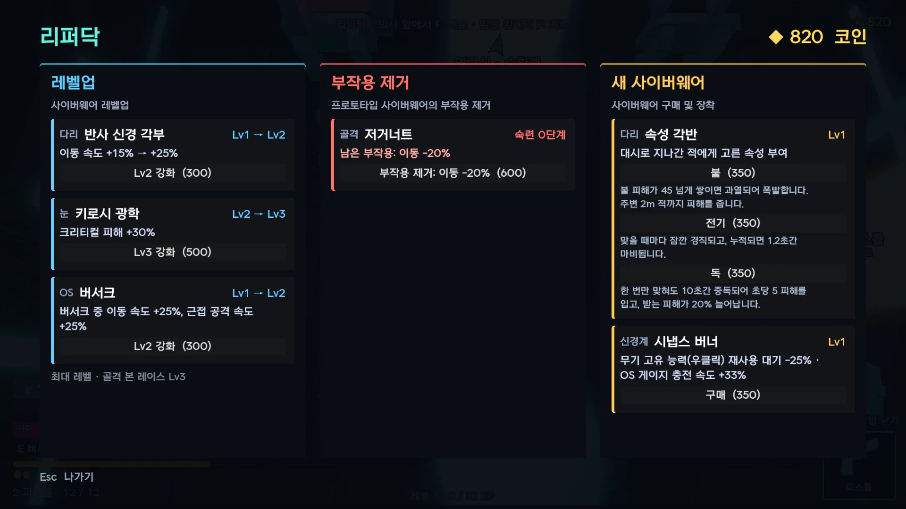
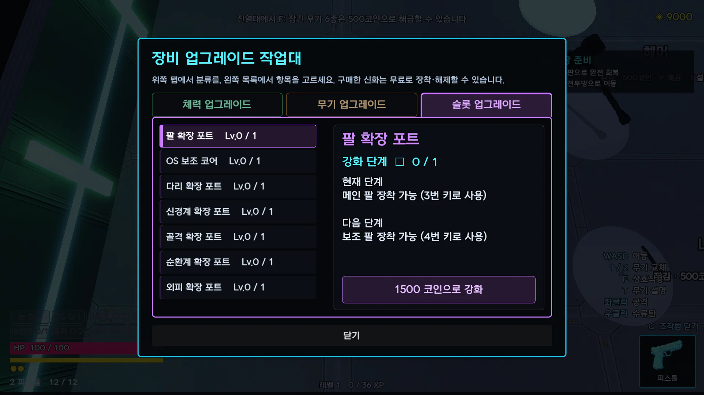

Edgerunners 기획서
성장 기획서
경험치, 명상, 숙련도, 코인, 회차, 사망 후에도 남는 항목을 다룹니다.

성장 기획서
EDGE
RUNNERS
사이버펑크 2077을 탑다운 로그라이트로 재구성한 게임.
빌드를 조합 · 시험하며 적을 처치하는 구조.
플레이어 성장 방법과 사망 · 보스 처치 시 남는 요소 정리.
장대규
1인 개발, Godot 4.7.2, 2026.08.21 – 10.21
01
플레이어 성장 방법을 성장 요소별로 나누고, 판 종료 시 남는 요소를 정리한 세부 기획서입니다.
다루는 성장 요소
경험치 · 레벨처치로 누적, 레벨업마다 스킬 포인트 1
명상스킬 포인트로 배우는 세 갈래 15칸
숙련도장비마다 쌓이는 처치 수
사이버웨어 레벨같은 것을 다시 얻으면 Lv3까지
코인 · 작업대영구 강화와 무기 해금
회차보스 처치 후 이어지는 다음 판
사망 시 처리
| 성장 요소 | 사망 시 |
|---|
| 사이버웨어 레벨, 카드, 스탯 보상 | 손실 |
| 경험치, 명상, 숙련도, 코인, 작업대 강화 | 유지 |
기준
- 수치는 성장 기획서를 기준으로 합니다.
- 사이버웨어별 레벨 효과는 사이버웨어 레벨 표에 정리되어 있습니다.
- 기본 능력치와 피해 기준은 전투 규칙 기획서에 정리되어 있습니다.
01 남는 것과 잃는 것
사망 시 빌드 손실, 경험치 · 숙련도 · 코인 유지
장착한 사이버웨어와 레벨
카드
스탯 보상
훈련장에서 붙인 무기 속성
회차
사이버웨어가 사망 후에도 남으면 몇 판 만에 모든 슬롯이 채워집니다.
이 경우 판마다 다른 빌드를 시도할 이유가 사라집니다.
경험치 · 레벨
명상
숙련도
코인
작업대 영구 강화
무기 해금
장착한 두 무기
사망한 판에서 쌓은 경험치, 숙련도, 코인은 그대로 유지됩니다.
따라서 사망한 판의 플레이도 다음 판의 성장으로 이어집니다.
보스 처치 시
왼쪽 칸의 요소도 모두 유지한 채 다음 회차로 진행합니다.
대신 적의 체력과 피해가 회차마다 증가합니다.
EDGERUNNERS 성장 기획서
02
02
빌드는 잃고 누적 성장은 유지하여, 사망한 판도 다음 판으로 이어지게 합니다.
사망 시 유지되는 예외
- 작업대에서 산 신화 카드는 유지됩니다.
- 속성 변환기로 정한 시작 속성은 유지됩니다.
- 장착하고 있던 두 무기는 그대로 들고 시설로 복귀합니다.
회차 초기화 이유
회차만 남고 사이버웨어를 잃으면 빈 슬롯으로 강해진 적을 상대하게 됩니다.
이 경우 승리가 어려우므로 회차와 빌드를 함께 초기화합니다.
사망 후 복귀 흐름
- 사망빌드를 잃고 1회차로
- 시설 입장방안내 창이 명상 발판으로 안내
- 리퍼닥사이버웨어 Lv1 하나를 350코인에 판매
- 다시 출격구매한 사이버웨어를 장착한 채 출격
02 경험치와 레벨
레벨업 보상: 체력 회복과 스킬 포인트 1
누적 경험치 3078
스킬 포인트 27, 명상 전체 습득 가능
다음 레벨까지 필요한 경험치
30 + 6 × 현재 레벨
1레벨 → 2레벨: 36
27레벨 → 28레벨: 192
목표: 명상 전체 습득까지 7판 안팎.
EDGERUNNERS 성장 기획서
03
03
경험치는 소비하지 않고 누적만 됩니다. 스킬은 레벨업으로 얻은 스킬 포인트로 배웁니다.
레벨 곡선
+6레벨마다 늘어나는 필요 경험치
3078최대 레벨 28까지 누적 경험치
27최대 레벨에서 가진 스킬 포인트
처치 경험치의 예외
- 적이 많은 방에서는 적 1명당 경험치와 코인이 줄어듭니다.
- 방 하나에서 얻는 합계는 적 수와 관계없이 같습니다.
- 숙련도는 줄지 않습니다.
레벨업 보상
- 체력을 최대치까지 회복합니다.
- 전투 중에도 레벨업을 즉시 체감하게 하기 위해서입니다.
- 경험치는 화면 맨 아래 보라색 막대로 항상 표시합니다.
03 명상
세 갈래 다섯 칸 구조의 명상과 마지막 칸 궁극기

레벨 28에 모든 칸을 배운 명상 창. 오른쪽 가지는 숙련도.
칸마다 필요한 스킬 포인트
생존 ⑤ 버티기 폭발
버티는 순간 주변 6.5m의 적에게 피해 150, 기절 1.5초
전투 ⑤ 처형
공격한 적의 체력이 20% 이하가 되면 즉시 처치 (보스 제외)
이동 ⑤ 대시 관통
대시로 지나간 적에게 피해 15, 넘어뜨림 1.2초
EDGERUNNERS 성장 기획서
04
04
앞 칸은 싸고 뒤 칸은 비쌉니다. 따라서 포인트가 적을 때는 여러 갈래의 앞 칸을 고루 배우게 됩니다.
궁극기 앞의 네 칸
| 갈래 | ① 필수 (1) | ② 필수 (1) | ③ 강화 (2) | ④ 강화 (2) |
|---|
| 생존 | 최대 체력 +10 | 구급상자 회복량 +25% | 방에 들어갈 때 체력 10% 회복 | 버티기: 죽을 피해를 받으면 체력 1로 버팀 (판당 1회) |
| 전투 | 모든 피해 +5% | 근접 또는 원거리 피해 +5% | OS 게이지 충전 속도 +15% | 엘리트 · 보스 피해 +15% |
| 이동 | 이동 속도 +5% | 대시 쿨다운 −10% | 대시 횟수 +1 | 대시 직후 0.5초 동안 피해 +20% |
단일 갈림길
- 전투 ②만 근접과 원거리 중 하나를 선택합니다.
- 명상에서 언제든 무료로 바꿀 수 있습니다. 잘못 골라도 손해가 남지 않습니다.
- 궁극기는 별도 입력 키 없이 조건 충족 시 발동합니다.
해금 시점
- 첫 판에는 잠깁니다.
- 첫 사망 또는 첫 보스 처치 후 시설로 복귀하면 해금됩니다.
- 첫 플레이어가 신경 쓸 요소를 하나 줄이기 위해서입니다.
04 숙련도
장착 중 처치 수로 오르고 사망 시에도 유지되는 숙련도
EDGERUNNERS 성장 기획서
05
05
숙련도는 같은 장비를 오래 쓴 플레이어에게 주는 보상입니다. 사이버웨어를 잃어도 유지됩니다.
무기마다 오르는 수치
| 무기 | 숙련도로 오르는 수치 |
|---|
| 카타나 | 발도 재사용 |
| 해머 | 투척 속도 |
| 나이프 | 투척 · 배후 일격 피해 |
| 피스톨 | 재장전 시간 |
| SMG | 연사 속도 |
| 체인소드 · 샷건 · 스나이퍼 | 피해 |
사이버웨어의 예외
- 일부는 고정값이 오릅니다(스마트링크 크리티컬 확률 +5%p, 사이버덱 최대 RAM +10).
- 뉴럴 링크, 피해 판독기, 약점 스캐너, 혈액펌프는 숙련도로 오르는 수치가 없습니다.
집계 방식의 근거
- 무기는 손에 든 것만 집계합니다. 두 무기를 번갈아 쓸 때 쓰지 않은 무기의 상승을 막기 위해서입니다.
- 사이버웨어는 장착 중 항상 효과를 내므로 모두 집계합니다.
목표 도달 속도
- 1단계 도달 목표는 첫 판 중반입니다.
- 3단계 도달 목표는 같은 장비로 3~4판입니다.
05 사이버웨어 레벨
같은 사이버웨어 재획득 시 새 기능 추가

리퍼닥 창. 장착한 사이버웨어의 코인 레벨업, 새 사이버웨어 구매.
EDGERUNNERS 성장 기획서
06
06
레벨업은 새 기능을, 숙련도는 수치를 담당합니다.
레벨이 오르는 길
- 좌대Lv1로 등장
- 다시 얻기같은 사이버웨어를 다시 얻으면 Lv2, Lv3
- 리퍼닥코인으로 다음 레벨
레벨업과 대가
- 일반 사이버웨어의 레벨업에는 대가가 붙지 않습니다.
- 예외는 오버드라이브 Lv3 '예술은 폭발이다'(이동 −30%) 하나입니다.
- 대가는 프로토타입에만 둡니다.
자세한 효과
- 사이버웨어 32종과 프로토타입 9종의 레벨별 효과는 사이버웨어 레벨 표에 정리되어 있습니다.
- 사망 후 복귀한 시설 입장방에서도 리퍼닥이 새 사이버웨어 Lv1 하나를 판매합니다.
06 프로토타입 대가
숙련도 단계마다 1/3씩 감소하는 프로토타입 대가
예: 저거너트의 대가 (이동 속도 −20%)
제거 600
제거 400
제거 200
제거 불필요
켜고 끄는 대가
과부하 발사기의 자기 폭발, 소각 각부의 불길 피해는 감소 없이 3단계에서 한 번에 사라집니다.
사망 시 숙련도 유지
같은 프로토타입을 다음 판에 다시 얻으면 줄어든 대가로 시작합니다.
리퍼닥에서 대가 제거
코인으로 즉시 제거 가능합니다. 비용은 숙련도 단계마다 200씩 감소합니다.
EDGERUNNERS 성장 기획서
07
07
대가 감소 속도를 숙련도에 연동하여, 프로토타입을 오래 쓸수록 손해가 작아지게 합니다.
대가 종류별 감소 방식
| 대가 | 1단계 | 2단계 | 3단계 |
|---|
| 수치 대가 (예: 이동 −20%) | 2/3 남음 | 1/3 남음 | 없음 |
| 켜고 끄는 대가 (예: 자기 폭발) | 그대로 | 그대로 | 없음 |
대가 부여 이유
- 대가 없는 강화는 선택 고민 요소가 되지 않습니다.
- 프로토타입 9종은 모두 대가가 있으며 ??? 방에서만 나옵니다.
- 프로토타입에는 레벨이 없습니다.
플레이어의 선택
- 대가를 감수하고 계속 쓰면 숙련도가 올라 대가가 줄어듭니다.
- 리퍼닥에서 코인으로 즉시 제거할 수 있습니다.
- 숙련도는 사망 후에도 유지됩니다. 같은 프로토타입을 다시 얻으면 줄어든 대가로 시작합니다.
07 코인과 작업대
사망 시 유지되는 코인과 새 선택지 항목의 높은 가격

작업대 슬롯 탭에서 눈을 뺀 일곱 부위의 슬롯을 하나씩 확장합니다.
EDGERUNNERS 성장 기획서
08
08
새 선택지를 여는 항목을 기존 능력 강화 항목보다 비싸게 책정합니다. 초반 구매 순서의 선택 고민을 만들기 위해서입니다.
시설 구매 항목
| 어디서 | 살 것 | 값 | 상한 |
|---|
| 진열대 | 무기 해금 | 500 | 무기당 1회 (카타나 · 피스톨은 처음부터) |
| 작업대 · 체력 | 바디슈트 (최대 체력 +20) | 300 / 단계 | 5단계 |
| 작업대 · 무기 | 데미지 (피해 +10%) | 300 / 단계 | 무기당 5단계 |
| 작업대 · 무기 | 속성 변환기 | 900 | 무기당 1회 |
| 작업대 · 무기 | 신화 | 1500 | 무기당 1회 |
| 작업대 · 슬롯 | 확장 포트 | 1500 | 부위당 1회 |
| 작업대 · 슬롯 | OS 보조 코어 | 3000 | 1회 |
가격 책정 근거
- 첫 판에 무기 여덟 종을 모두 주면 무기 간 차이를 배우기 전에 선택해야 합니다. 따라서 하나씩 해금합니다.
- 팔과 OS 슬롯은 조작 키(3 · 4번, E · Q)와 연결되므로 판 안에서 거래하지 않습니다.
- OS 보조 코어가 최고가인 이유는 OS 능력의 전투 영향이 가장 크기 때문입니다.
속성 변환기
- 1회 구매 후 해당 무기의 시작 속성을 언제든 무료로 변경합니다.
- 변경마다 코인을 받으면 여러 속성 빌드를 시험하기 어렵습니다.
기타 코인 규칙
- 처치 코인은 드론 8, 메딕 12입니다.
- 판 안에서는 상점 · 휴식방의 일반 카드(475)와 리퍼닥에 사용합니다.
- 해금하지 않은 무기의 강화는 구매할 수 없습니다.
08 회차
보스 처치 후 빌드를 유지한 다음 회차 진행
1회차
2회차
3회차
4회차
5회차
6회차
7회차
8회차 이후
유지 요소
사이버웨어, 카드, 코인, 스탯 보상
EDGERUNNERS 성장 기획서
09
09
적이 강해지지 않으면 보스를 이긴 빌드로 같은 적을 다시 상대하게 됩니다. 이 경우 다음 회차의 플레이 이유가 없습니다.
배율 계산
- 적 체력 = 1 + 0.5 × (회차 − 1), 상한 ×4.5
- 적 피해 = 1 + 0.3 × (회차 − 1), 상한 ×2.6
- 곱셈이 아닌 덧셈 방식이므로 회차별 배율을 바로 계산할 수 있습니다.
상한 설정 이유
상한이 없으면 적의 공격 몇 번에 사망합니다.
이 경우 실력과 관계없이 승패가 갈립니다.
보스 처치 이후
- 승리 화면에 다음 회차의 적 체력 · 공격력 배율을 표시합니다.
- 첫 처치 이후 초회차 학습 순서가 해제되어 첫 방부터 모든 장치가 나옵니다.
- 명상이 잠겨 있었다면 이 시점에 해금됩니다.
09 정리
적 처치로 함께 쌓이는 경험치 · 숙련도 · 코인
단계 상승
핵심 수치 약 +5% · 보너스 경험치
영구 강화
무기 해금 · 슬롯 확장 · 속성 변환기
세 가지 모두 사망 시 유지
빌드를 잃은 판의 플레이도 다음 판의 시작 전력을 높입니다.
EDGERUNNERS 성장 기획서
10
10
경험치, 숙련도, 코인은 모두 처치에서 나옵니다. 세 가지 모두 사망 후에도 유지됩니다.
한 판 안의 성장과의 관계
- 사이버웨어, 카드, 스탯 보상은 해당 판의 빌드 구성에 사용합니다.
- 세 요소는 사망 시 사라지고, 보스 처치 시 다음 회차로 이월됩니다.
성장 요소 간 연결
- 숙련도 단계가 오르면 보너스 경험치 15 · 30 · 60을 지급합니다.
- 숙련도는 프로토타입 대가를 줄이고 리퍼닥의 대가 제거 비용도 낮춥니다.
- 목표는 명상 전체 습득까지 7판 안팎입니다.